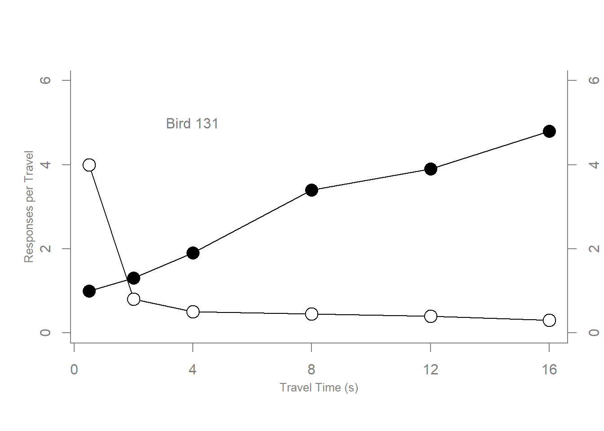

# Scatterplot
#
x <- c(0.5, 2, 4, 8, 12, 16) # We create some data points for x, y1, y2 for plotting
y1 <- c(1, 1.3, 1.9, 3.4, 3.9, 4.8)
y2 <- c(4, .8, .5, .45, .4, .3)
# Setting label orientation, margins c(bottom, left, top, right) & text size
plot.new()
plot.window(range(x), c(0, 6)) # plot.new() and plot.window() are to initiate plotting
lines(x, y1) # Add lines
lines(x, y2)
points(x, y1, pch=16, cex=2) # Add points, pch is for different shapes
points(x, y2, pch=21, bg="white", cex=2) # Different background color
par(col="gray50", fg="gray50", col.axis="gray50")
axis(1, at=seq(0, 16, 4)) # Add horizontal line
axis(2, at=seq(0, 6, 2)) # Add left vertical line
axis(4, at=seq(0, 6, 2)) # Add right vertical line
box(bty="u")
mtext("Travel Time (s)", side=1, line=2, cex=0.8) # Add text describing vertical line
mtext("Responses per Travel", side=2, line=2, las=0, cex=0.8) # Add text describing left vertical line
mtext("Responses per Second", side=4, line=2, las=0, cex=0.8) # Add text describing right vertical line
text(4, 5, "Bird 131") # Add text 